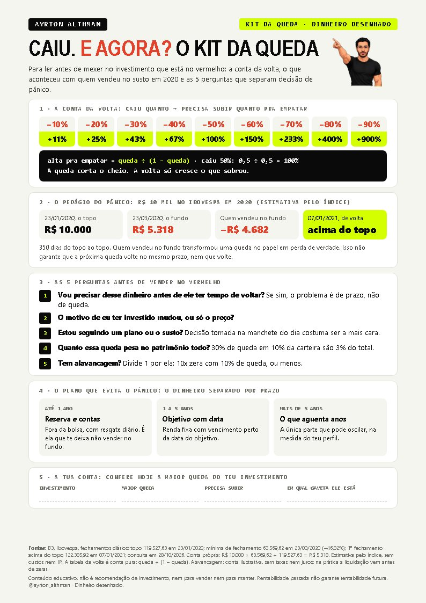

Dinheiro desenhado · Kit da queda
Caiu. E agora?
Para ler antes de mexer no investimento que está no vermelho. Começa pela conta do teu caso.
Dos R$ 10.000 sobraram R$ 5.000. Pra voltar, esses R$ 5.000 precisam virar R$ 10.000.
A queda corta o cheio. A volta só cresce o que sobrou. Conta pura: queda ÷ (1 − queda).
Abriu pelo Instagram e o PDF não baixou? Toca nos três pontinhos no canto da tela, escolhe Abrir no navegador e toca no botão de novo.
A tabela da volta
O pedágio do pânico: R$ 10 mil no Ibovespa em 2020
350 dias do topo ao topo. Quem vendeu no fundo transformou uma queda no papel em perda de verdade. Estimativa pelo índice, sem custos nem IR. Isso não garante que a próxima queda volte no mesmo prazo, nem que volte.
As 5 perguntas antes de vender no vermelho
- Vou precisar desse dinheiro antes de ele ter tempo de voltar? Se sim, o problema é de prazo, não de queda.
- O motivo de eu ter investido mudou, ou só o preço?
- Estou seguindo um plano ou o susto? Decisão tomada na manchete do dia costuma ser a mais cara.
- Quanto essa queda pesa no patrimônio todo? 30% de queda em 10% da carteira são 3% do total.
- Tem alavancagem? Divide 1 por ela: 10x zera com 10% de queda, ou menos.
O plano que evita o pânico
O dinheiro separado por prazo, antes da próxima queda:
- ATÉ 1 ANOReserva e contas. Fora da bolsa, com resgate diário. É ela que te deixa não vender no fundo.
- 1 A 5 ANOSObjetivo com data. Renda fixa com vencimento perto da data do objetivo.
- MAIS DE 5 ANOSO que aguenta anos. A única parte que pode oscilar, na medida do teu perfil.
Quer saber em qual gaveta está cada parte do teu dinheiro? Me manda no direct o que caiu e em quanto tempo você vai precisar dele.
Me chama no directPra montar a reserva, a primeira gaveta: Guia nº 01 · Renda fixa desenhada.

Fontes: B3, Ibovespa, fechamentos diários: topo 119.527,63 em 23/01/2020; mínima de fechamento 63.569,62 em 23/03/2020 (−46,82%); 1º fechamento acima do topo 122.385,92 em 07/01/2021; consulta em 28/10/2026. Conta própria: R$ 10.000 × 63.569,62 ÷ 119.527,63 = R$ 5.318. Alavancagem: conta ilustrativa, sem taxas nem juros; na prática a liquidação vem antes de zerar.
Episódio novo de seg, qua e sex no @ayrton_althman. Conteúdo educativo, não é recomendação de investimento, nem para vender nem para manter. Rentabilidade passada não garante rentabilidade futura.